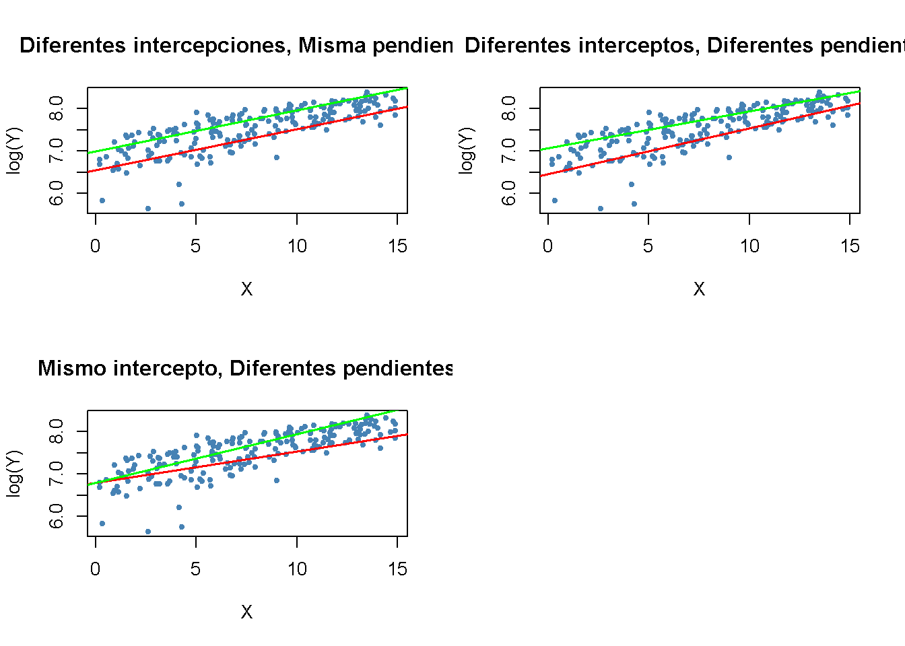

9.3 Interacciones entre variables independientes
Existen preguntas de investigación en las que es interesante saber cómo el efecto sobre \(Y\) de un cambio en una variable independiente, depende del valor de otra variable independiente. Por ejemplo, se puede preguntar si los distritos con muchos estudiantes de inglés se benefician de manera diferente de una disminución en el tamaño de las clases que aquellos con pocos estudiantes de inglés. Para evaluar esto usando un modelo de regresión múltiple, se incluye un término de interacción. Se consideran tres casos:
Interacciones entre dos variables binarias.
Interacciones entre una variable binaria y una continua.
Interacciones entre dos variables continuas.
Las siguientes subsecciones discuten estos casos brevemente y demuestran cómo realizar tales regresiones en R.
Interacciones entre dos variables binarias
Tomando dos variables binarias \(D_1\) y \(D_2\), así como el modelo de regresión de población
\[ Y_i = \beta_0 + \beta_1 \times D_{1i} + \beta_2 \times D_{2i} + u_i. \]
Se asume que:
\[\begin{align*} Y_i=& \, \ln(Ganancias_i),\\ D_{1i} =& \, \begin{cases} 1 & \text{si $i^{ésimo}$ la persona tiene un título universitario,} \\ 0 & \text{de otro modo}. \end{cases} \\ D_{2i} =& \, \begin{cases} 1 & \text{si $i^{ésimo}$ la persona es mujer,} \\ 0 & \text{si $i^{ésimo}$ la persona es hombre}. \end{cases} \end{align*}\]
Se sabe que \(\beta_1\) mide la diferencia promedio en \(\ln(Ganancias)\) entre personas con y sin título universitario y \(\beta_2\) es la diferencia de género en \(\ln(Ganancias)\), ceteris paribus. Este modelo no permite determinar si existe un efecto específico del género al tener un título universitario y, de ser así, qué tan fuerte es este efecto. Es fácil llegar a una especificación de modelo que permita investigar esto:
\[ Y_i = \beta_0 + \beta_1 \times D_{1i} + \beta_2 \times D_{2i} + \beta_3 \times (D_{1i} \times D_{2i}) + u_i \]
\((D_{1i} \times D_{2i})\) se llama un término de interacción y \(\beta_3\) mide la diferencia en el efecto de tener un título universitario para mujeres versus hombres.
Concepto clave 8.3
Un método para interpretar coeficientes en regresión con variables binarias
Calcular los valores esperados de \(Y\) para cada conjunto posible descrito por el conjunto de variables binarias. Comparar los valores esperados.
Los coeficientes se pueden expresar como valores esperados o como la diferencia entre al menos dos valores esperados.
Siguiendo el Concepto clave 8.3 se tiene que
\[\begin{align*} E(Y_i\vert D_{1i}=0, D_{2i} = d_2) =& \, \beta_0 + \beta_1 \times 0 + \beta_2 \times d_2 + \beta_3 \times (0 \times d_2) \\ =& \, \beta_0 + \beta_2 \times d_2. \end{align*}\]
Si \(D_ {1i}\) cambia de \(0\) a \(1\) se tiene
\[\begin{align*} E(Y_i\vert D_{1i}=1, D_{2i} = d_2) =& \, \beta_0 + \beta_1 \times 1 + \beta_2 \times d_2 + \beta_3 \times (1 \times d_2) \\ =& \, \beta_0 + \beta_1 + \beta_2 \times d_2 + \beta_3 \times d_2. \end{align*}\]
Por lo tanto, el efecto general es
\[ E(Y_i\vert D_{1i}=1, D_{2i} = d_2) - E(Y_i\vert D_{1i}=0, D_{2i} = d_2) = \beta_1 + \beta_3 \times d_2 \]
por lo que el efecto es una diferencia de los valores esperados.
Aplicación a la proporción de estudiantes por maestro y el porcentaje de estudiantes de inglés
Ahora sea
\[\begin{align*} HiSTR =& \, \begin{cases} 1, & \text{si $STR \geq 20$} \\ 0, & \text{de otro modo}. \end{cases} \\ \\ HiEL =& \, \begin{cases} 1, & \text{si $PctEL \geq 10$} \\ 0, & \text{de otro modo}. \end{cases} \end{align*}\]
Se puede usar R para construir las variables anteriores de la siguiente manera:
# adjuntar HiSTR a CASchools
CASchools$HiSTR <- as.numeric(CASchools$size >= 20)
# adjuntar HiEL a CASchools
CASchools$HiEL <- as.numeric(CASchools$english >= 10)Se procede a estimar el modelo
\[\begin{align} TestScore = \beta_0 + \beta_1 \times HiSTR + \beta_2 \times HiEL + \beta_3 \times (HiSTR \times HiEL) + u_i. \tag{9.1} \end{align}\]
Existen varias formas de agregar el término de interacción al argumento formula cuando se usa lm(), pero la forma más intuitiva es usar .1
# estimar el modelo con un término de interacción binaria
bi_model <- lm(score ~ HiSTR * HiEL, data = CASchools)
# imprimir un resumen sólido de los coeficientes
coeftest(bi_model, vcov. = vcovHC, type = "HC1")
#>
#> t test of coefficients:
#>
#> Estimate Std. Error t value Pr(>|t|)
#> (Intercept) 664.1433 1.3881 478.4589 < 2.2e-16 ***
#> HiSTR -1.9078 1.9322 -0.9874 0.3240
#> HiEL -18.3155 2.3340 -7.8472 3.634e-14 ***
#> HiSTR:HiEL -3.2601 3.1189 -1.0453 0.2965
#> ---
#> Signif. codes: 0 '***' 0.001 '**' 0.01 '*' 0.05 '.' 0.1 ' ' 1El modelo de regresión estimado es
\[\widehat{TestScore} = \underset{(1.39)}{664.1} - \underset{(1.93)}{1.9} \times HiSTR - \underset{(2.33)}{18.3} \times HiEL - \underset{(3.12)}{3.3} \times (HiSTR \times HiEL)\]
y predice que el efecto de pasar de un distrito escolar con una proporción baja de alumnos por maestro a un distrito con una alta proporción de alumnos por maestro, dependiendo del porcentaje alto o bajo de estudiantes de inglés, es de \(-1.9-3.3\times HiEL\). Entonces, para los distritos con una baja proporción de estudiantes de inglés (\(HiEL = 0\)), el efecto estimado es una disminución de \(1.9\) puntos en los puntajes de las pruebas, mientras que para los distritos con una gran fracción de estudiantes de inglés (\(HiEL = 1\)), la disminución prevista en los puntajes de las pruebas asciende a \(1.9 + 3.3 = 5.2\) puntos.
También se puede utilizar el modelo para estimar la puntuación media de la prueba para cada combinación posible de las variables binarias incluidas.
# medias estimadas para todas las combinaciones de HiSTR y HiEL
# 1.
predict(bi_model, newdata = data.frame("HiSTR" = 0, "HiEL" = 0))
#> 1
#> 664.1433
# 2.
predict(bi_model, newdata = data.frame("HiSTR" = 0, "HiEL" = 1))
#> 1
#> 645.8278
# 3.
predict(bi_model, newdata = data.frame("HiSTR" = 1, "HiEL" = 0))
#> 1
#> 662.2354
# 4.
predict(bi_model, newdata = data.frame("HiSTR" = 1, "HiEL" = 1))
#> 1
#> 640.6598Ahora se verifica que estas predicciones son diferencias en las estimaciones de coeficientes presentadas en la ecuación (9.1):
\[\begin{align*} \widehat{TestScore} = \hat\beta_0 = 664.1 \quad &\Leftrightarrow \quad HiSTR = 0, \, HIEL = 0\\ \widehat{TestScore} = \hat\beta_0 + \hat\beta_2 = 664.1 - 18.3 = 645.8 \quad &\Leftrightarrow \quad HiSTR = 0, \, HIEL = 1\\ \widehat{TestScore} = \hat\beta_0 + \hat\beta_1 = 664.1 - 1.9 = 662.2 \quad &\Leftrightarrow \quad HiSTR = 1, \, HIEL = 0\\ \widehat{TestScore} = \hat\beta_0 + \hat\beta_1 + \hat\beta_2 + \hat\beta_3 = 664.1 - 1.9 - 18.3 - 3.3 = 640.6 \quad &\Leftrightarrow \quad HiSTR = 1, \, HIEL = 1 \end{align*}\]
Interacciones entre una variable continua y una binaria
Ahora suponga que \(X_i\) denota los años de experiencia laboral de la persona \(i\), que es una variable continua. Se tiene que:
\[\begin{align*} Y_i =& \, \ln(Ganancias_i), \\ \\ X_i =& \, \text{experiencia laboral de la persona }i, \\ \\ D_i =& \, \begin{cases} 1, & \text{si $i^{ésimo}$ persona tiene un título universitario} \\ 0, & \text{de otro modo}. \end{cases} \end{align*}\]
Por tanto, el modelo de línea base es
\[ Y_i = \beta_0 + \beta_1 X_i + \beta_2 D_i + u_i, \]
un modelo de regresión múltiple que permite estimar el beneficio promedio de tener un título universitario manteniendo constante la experiencia laboral, así como el efecto promedio sobre los ingresos de un cambio en la experiencia laboral manteniendo constante el título universitario.
Al agregar el término de interacción \(X_i \times D_i\) permite que el efecto de un año adicional de experiencia laboral difiera entre individuos con y sin título universitario,
\[ Y_i = \beta_0 + \beta_1 X_i + \beta_2 D_i + \beta_3 (X_i \times D_i) + u_i. \]
Aquí, \(\beta_3\) es la diferencia esperada en el efecto de un año adicional de experiencia laboral para graduados universitarios versus no graduados. Otra posible especificación es:
\[ Y_i = \beta_0 + \beta_1 X_i + \beta_2 (X_i \times D_i) + u_i. \]
Este modelo establece que el impacto esperado de un año adicional de experiencia laboral en los ingresos difiere para los graduados universitarios y los no graduados, pero que graduarse por sí solo no aumenta los ingresos.
Las tres funciones de regresión se pueden visualizar mediante líneas rectas. El Concepto clave 8.4 resume las diferencias.
Concepto clave 8.4
Interacciones entre variables binarias y continuas
Un término de interacción como \(X_i \times D_i\) (donde \(X_i\) es continuo y \(D_i\) es binario) permite que la pendiente dependa de la variable binaria \(D_i\). Existen tres posibilidades:
Diferente intersección y misma pendiente: \[ Y_i = \beta_0 + \beta_1 X_i + \beta_2 D_i + u_i \]
Diferente intersección y diferente pendiente: \[ Y_i = \beta_0 + \beta_1 X_i + \beta_2 D_i + \beta_3 \times (X_i \times D_i) + u_i \]
Misma intersección y pendiente diferente: \[ Y_i = \beta_0 + \beta_1 X_i + \beta_2 (X_i \times D_i) + u_i \]
El siguiente fragmento de código demuestra cómo replicar los resultados utilizando datos artificiales.
# generar datos artificiales
set.seed(1)
X <- runif(200,0, 15)
D <- sample(0:1, 200, replace = T)
Y <- 450 + 150 * X + 500 * D + 50 * (X * D) + rnorm(200, sd = 300)
# dividir el área de graficado de manera congruente
m <- rbind(c(1, 2), c(3, 0))
graphics::layout(m)
# estimar los modelos y graficar las líneas de regresión
# 1. (modelo de línea base)
plot(X, log(Y),
pch = 20,
col = "steelblue",
main = "Diferentes intercepciones, Misma pendiente")
mod1_coef <- lm(log(Y) ~ X + D)$coefficients
abline(coef = c(mod1_coef[1], mod1_coef[2]),
col = "red",
lwd = 1.5)
abline(coef = c(mod1_coef[1] + mod1_coef[3], mod1_coef[2]),
col = "green",
lwd = 1.5)
# 2. (modelo de línea base + término de interacción)
plot(X, log(Y),
pch = 20,
col = "steelblue",
main = "Diferentes interceptos, Diferentes pendientes")
mod2_coef <- lm(log(Y) ~ X + D + X:D)$coefficients
abline(coef = c(mod2_coef[1], mod2_coef[2]),
col = "red",
lwd = 1.5)
abline(coef = c(mod2_coef[1] + mod2_coef[3], mod2_coef[2] + mod2_coef[4]),
col = "green",
lwd = 1.5)
# 3. (omisión de D como regresor + término de interacción)
plot(X, log(Y),
pch = 20,
col = "steelblue",
main = "Mismo intercepto, Diferentes pendientes")
mod3_coef <- lm(log(Y) ~ X + X:D)$coefficients
abline(coef = c(mod3_coef[1], mod3_coef[2]),
col = "red",
lwd = 1.5)
abline(coef = c(mod3_coef[1], mod3_coef[2] + mod3_coef[3]),
col = "green",
lwd = 1.5)
Aplicación a la proporción de estudiantes por maestro y el porcentaje de estudiantes de inglés
Usando una especificación de modelo como la segunda discutida en el Concepto clave 8.3 (pendiente diferente, intersección diferente) se puede responder a la pregunta de si el efecto en los puntajes de las pruebas de disminuir la proporción de estudiantes por maestro depende de si hay muchos o pocos estudiantes de inglés. Estimando el modelo de regresión:
\[ \widehat{TestScore_i} = \beta_0 + \beta_1 \times size_i + \beta_2 \times HiEL_i + \beta_2 (size_i \times HiEL_i) + u_i. \]
# estimar el modelo
bci_model <- lm(score ~ size + HiEL + size * HiEL, data = CASchools)
# imprimir un resumen sólido de coeficientes en la consola
coeftest(bci_model, vcov. = vcovHC, type = "HC1")
#>
#> t test of coefficients:
#>
#> Estimate Std. Error t value Pr(>|t|)
#> (Intercept) 682.24584 11.86781 57.4871 <2e-16 ***
#> size -0.96846 0.58910 -1.6440 0.1009
#> HiEL 5.63914 19.51456 0.2890 0.7727
#> size:HiEL -1.27661 0.96692 -1.3203 0.1875
#> ---
#> Signif. codes: 0 '***' 0.001 '**' 0.01 '*' 0.05 '.' 0.1 ' ' 1El modelo de regresión estimado es
\[ \widehat{TestScore} = \underset{(11.87)}{682.2} - \underset{(0.59)}{0.97} \times size + \underset{(19.51)}{5.6} \times HiEL - \underset{(0.97)}{1.28} \times (size \times HiEL). \]
La línea de regresión estimada para distritos con una fracción baja de estudiantes de inglés (\(HiEL_i=0\)) es
\[ \widehat{TestScore} = 682.2 - 0.97\times size_i. \]
Para los distritos con una alta fracción de estudiantes de inglés, se tiene:
\[\begin{align*} \widehat{TestScore} =& \, 682.2 + 5.6 - 0.97\times size_i - 1.28 \times size_i \\ =& \, 687.8 - 2.25 \times size_i. \end{align*}\]
El aumento previsto en los puntajes de las pruebas después de una reducción de la proporción de estudiantes por maestro en \(1\) unidad es de aproximadamente \(0.97\) puntos en distritos donde la fracción de estudiantes de inglés es baja, pero \(2.25\) en distritos con una alta proporción de estudiantes de inglés. A partir del coeficiente del término de interacción \(size \times HiEL\), se puede ver que la diferencia entre ambos efectos es de \(1.28\) puntos.
El siguiente fragmento de código grafica ambas líneas que pertenecen al modelo. Para hacer observaciones con \(HiEL = 0\) distinguibles de aquellas con \(HiEL = 1\), usando diferentes colores.
# identificar observaciones con PctEL> = 10
id <- CASchools$english >= 10
# graficar observaciones con HiEL = 0 como puntos rojos
plot(CASchools$size[!id], CASchools$score[!id],
xlim = c(0, 27),
ylim = c(600, 720),
pch = 20,
col = "red",
main = "",
xlab = "Tamaño de la clase",
ylab = "Resultado de la prueba")
# graficar observaciones con HiEL = 1 como puntos verdes
points(CASchools$size[id], CASchools$score[id],
pch = 20,
col = "green")
# leer los coeficientes estimados de bci_model
coefs <- bci_model$coefficients
# dgraficar la línea de regresión estimada para HiEL = 0
abline(coef = c(coefs[1], coefs[2]),
col = "red",
lwd = 1.5)
# graficar la línea de regresión estimada para HiEL = 1
abline(coef = c(coefs[1] + coefs[3], coefs[2] + coefs[4]),
col = "green",
lwd = 1.5 )
# agregar una leyenda a la trama
legend("topright",
pch = c(20, 20),
col = c("red", "green"),
legend = c("HiEL = 0", "HiEL = 1"))Interacciones entre dos variables continuas
Considere un modelo de regresión con \(Y\) las ganancias logarítmicas y dos regresores continuos \(X_1\), los años de experiencia laboral, y \(X_2\), los años de escolaridad. Se quiere estimar el efecto sobre los salarios de un año adicional de experiencia laboral en función de un nivel de escolaridad determinado. Este efecto se puede evaluar al incluir el término de interacción \((X_{1i} \times X_{2i})\) en el modelo:
\[ \Delta Y_i = \beta_0 + \beta_1 \times X_{1i} + \beta_2 \times X_{2i} + \beta_3 \times (X_{1i} \times X_{2i}) + u_i \]
Siguiendo el Concepto clave 8.1 se puede encontrar que el efecto en \(Y\) de un cambio en \(X_1\) dado \(X_2\) es:
\[ \frac{\Delta Y}{\Delta X_1} = \beta_1 + \beta_3 X_2. \]
En el ejemplo de ingresos, un \(\beta_3\) positivo implica que el efecto sobre los ingresos logarítmicos de un año adicional de experiencia laboral crece linealmente con los años de escolaridad. Viceversa, se tiene \[ \frac{\Delta Y}{\Delta X_2} = \beta_2 + \beta_3 X_1 \] como el efecto sobre los ingresos logarítmicos de un año adicional de escolaridad manteniendo constante la experiencia laboral.
En total, se puede encontrar que \(\beta_3\) mide el efecto de un aumento unitario en \(X_1\) y \(X_2\) más allá de los efectos de aumentar \(X_1\) y \(X_2\) solo en una unidad. El cambio general en \(Y\) es por lo tanto
\[\begin{align} Y_i = (\beta_1 + \beta_3 X_2) \Delta X_1 + (\beta_2 + \beta_3 X_1) \Delta X_2 + \beta_3\Delta X_1 \Delta X_2. \tag{9.2} \end{align}\]
El Concepto clave 8.5 resume las interacciones entre dos regresores en regresión múltiple.
Concepto clave 8.5
Interacciones en regresión múltiple
El término de interacción entre los dos regresores \(X_1\) y \(X_2\) viene dado por su producto \(X_1 \times X_2\).
Agregar dicho término de interacción como regresor al modelo \[ Y_i = \beta_0 + \beta_1 X_1 + \beta_2 X_2 + u_i \] permite que el efecto en \(Y\) de un cambio en \(X_2\) dependa del valor de \(X_1\) y viceversa. Así, el coeficiente \(\beta_3\) en el modelo \[ Y_i = \beta_0 + \beta_1 X_1 + \beta_2 X_2 + \beta_3 (X_1 \times X_2) + u_i \] mide el efecto de un aumento unitario en \(X_1\)
9.3.0.1 Aplicación a la proporción de estudiantes por maestro y el porcentaje de estudiantes de inglés
Ahora se necesita examinar la interacción entre las variables continuas de la proporción de estudiantes por maestro y el porcentaje de estudiantes de inglés.
# estimar el modelo de regresión, incluida la interacción entre 'PctEL' y 'size'
cci_model <- lm(score ~ size + english + english * size, data = CASchools)
# imprimir un resumen en la consola
coeftest(cci_model, vcov. = vcovHC, type = "HC1")
#>
#> t test of coefficients:
#>
#> Estimate Std. Error t value Pr(>|t|)
#> (Intercept) 686.3385268 11.7593466 58.3654 < 2e-16 ***
#> size -1.1170184 0.5875136 -1.9013 0.05796 .
#> english -0.6729119 0.3741231 -1.7986 0.07280 .
#> size:english 0.0011618 0.0185357 0.0627 0.95005
#> ---
#> Signif. codes: 0 '***' 0.001 '**' 0.01 '*' 0.05 '.' 0.1 ' ' 1La ecuación del modelo estimada es
\[ \widehat{TestScore} = \underset{(11.76)}{686.3} - \underset{(0.59)}{1.12} \times STR - \underset{(0.37)}{0.67} \times PctEL + \underset{(0.02)}{0.0012} \times (STR\times PctEL). \]
Para la interpretación, se consideran los cuartiles de \(PctEL\).
summary(CASchools$english)
#> Min. 1st Qu. Median Mean 3rd Qu. Max.
#> 0.000 1.941 8.778 15.768 22.970 85.540De acuerdo con (9.2), si \(PctEL\) se encuentra en su valor mediano de \(8.78\), se predice que la pendiente de la función de regresión que relaciona los puntajes de las pruebas y la proporción alumno-maestro será \(-1.12 + 0.0012 \times 8.78 = -1.11\). Esto implica que el aumento de la proporción de estudiantes por maestro en una unidad deteriora los puntajes de las pruebas en \(1.11\) puntos. Para el cuantil \(75\%\), el cambio estimado en \(TestScore\) de un aumento de una unidad en \(STR\) se estima en \(-1.12 + 0.0012 \times 23.0 = -1.09\), por lo que la pendiente es algo menor. La interpretación es que para un distrito escolar con una participación del \(23\%\) de estudiantes de inglés, se espera que una reducción de la proporción de estudiantes por maestro en una unidad aumente los puntajes de las pruebas en solo \(1.09\) puntos.
Sin embargo, el resultado de summary() indica que la diferencia del efecto para la mediana y el cuantil \(75\%\) no es estadísticamente significativa. \(H_0: \beta_3 = 0\) no puede rechazarse en el nivel de significancia de \(5\%\) (el valor \(p\) es \(0.95\)).
Ejemplo: La demanda de revistas económicas
En esta sección se replica el ejemplo empírico . La pregunta central es: ¿Qué tan elástica es la demanda por parte de las bibliotecas de revistas económicas? La idea aquí es analizar la relación entre el número de suscripciones a una revista en las bibliotecas de EE. UU. y el precio de suscripción de la revista. El estudio utiliza el conjunto de datos Journals que se proporciona con el paquete AER y contiene observaciones para revistas económicas de \(180\) para el año 2000. Puede usar la función de ayuda (?Journals) para obtener más información sobre los datos después de cargar el paquete.
# cargar el paquete y conjunto de datos
library(AER)
data("Journals")Se mide el precio como “precio por cita” y se calcula la antigüedad de la revista y el número de caracteres manualmente. Para mantener la coherencia, también se cambia el nombre de las variables.
# definir y renombrar variables
Journals$PricePerCitation <- Journals$price/Journals$citations
Journals$Age <- 2000 - Journals$foundingyear
Journals$Characters <- Journals$charpp * Journals$pages/10^6
Journals$Subscriptions <- Journals$subsEl rango de “precio por cita” es bastante amplio:
# calcular estadísticas resumidas para el precio por cita
summary(Journals$PricePerCitation)
#> Min. 1st Qu. Median Mean 3rd Qu. Max.
#> 0.005223 0.464495 1.320513 2.548455 3.440171 24.459459El precio más bajo observado es de solo \(0.5\)¢ por cita, mientras que el precio más alto es de más de \(20\)¢ por cita.
Ahora se estiman cuatro especificaciones de modelo diferentes. Todos los modelos son modelos log-log. Esto es útil porque permite interpretar directamente los coeficientes como elasticidades, ver Concepto clave 8.2. \((I)\) sobre un modelo lineal. Para aliviar un posible sesgo de variable omitida, \((II)\) aumenta \((I)\) por las covariables \(\ln(Age)\) y \(\ln(Characters)\). El modelo más grande \((III)\) intenta capturar las no linealidades en la relación de \(\ln(Subscriptions)\) y \(\ln(PricePerCitation)\) usando una función de regresión cúbica de \(\ln(PricePerCitation)\) y también agrega el término de interacción \((PricePerCitation \times Age)\) mientras que la especificación \((IV)\) no incluye el término cúbico.
\[\begin{align*} (I)\quad \ln(Subscriptions_i) =& \, \beta_0 + \beta_1 \ln(PricePerCitation_i) + u_i \\ \\ (II)\quad \ln(Subscriptions_i) =& \, \beta_0 + \beta_1 \ln(PricePerCitation_i) + \beta_4 \ln(Age_i) + \beta_6 \ln(Characters_i) + u_i \\ \\ (III)\quad \ln(Subscriptions_i) =& \, \beta_0 + \beta_1 \ln(PricePerCitation_i) + \beta_2 \ln(PricePerCitation_i)^2 \\ +& \, \beta_3 \ln(PricePerCitation_i)^3 + \beta_4 \ln(Age_i) + \beta_5 \left[\ln(Age_i) \times \ln(PricePerCitation_i)\right] \\ +& \, \beta_6 \ln(Characters_i) + u_i \\ \\ (IV)\quad \ln(Subscriptions_i) =& \, \beta_0 + \beta_1 \ln(PricePerCitation_i) + \beta_4 \ln(Age_i) + \beta_6 \ln(Characters_i) + u_i \end{align*}\]
# Estimar modelos (I) - (IV)
Journals_mod1 <- lm(log(Subscriptions) ~ log(PricePerCitation),
data = Journals)
Journals_mod2 <- lm(log(Subscriptions) ~ log(PricePerCitation)
+ log(Age) + log(Characters),
data = Journals)
Journals_mod3 <- lm(log(Subscriptions) ~
log(PricePerCitation) + I(log(PricePerCitation)^2)
+ I(log(PricePerCitation)^3) + log(Age)
+ log(Age):log(PricePerCitation) + log(Characters),
data = Journals)
Journals_mod4 <- lm(log(Subscriptions) ~
log(PricePerCitation) + log(Age)
+ log(Age):log(PricePerCitation) +
log(Characters),
data = Journals)Usando summary(), se obtienen los siguientes modelos estimados:
\[\begin{align*} (I)\quad \widehat{\ln(Subscriptions_i)} =& \, 4.77 - 0.53 \ln(PricePerCitation_i) \\ \\ (II)\quad \widehat{\ln(Subscriptions_i)} =& \, 3.21 - 0.41 \ln(PricePerCitation_i) + 0.42 \ln(Age_i) + 0.21 \ln(Characters_i) \\ \\ (III)\quad \widehat{\ln(Subscriptions_i)} =& \, 3.41 - 0.96 \ln(PricePerCitation_i) + 0.02 \ln(PricePerCitation_i)^2 \\ &+ 0.004 \ln(PricePerCitation_i)^3 + 0.37 \ln(Age_i) \\ &+ 0.16 \left[\ln(Age_i) \times \ln(PricePerCitation_i)\right] \\ &+ 0.23 \ln(Characters_i) \\ \\ (IV)\quad \widehat{\ln(Subscriptions_i)} =& \, 3.43 - 0.90 \ln(PricePerCitation_i) + 0.37 \ln(Age_i) \\ &+ 0.14 \left[\ln(Age_i) \times \ln(PricePerCitation_i)\right] + 0.23 \ln(Characters_i) \end{align*}\]
Se usa una prueba \(F\) para probar si las transformaciones de \(\ln(PricePerCitation)\) en el modelo \((III)\) son estadísticamente significativas.
# Prueba F de significancia de términos cúbicos
linearHypothesis(Journals_mod3,
c("I(log(PricePerCitation)^2)=0", "I(log(PricePerCitation)^3)=0"),
vcov. = vcovHC, type = "HC1")
#> Linear hypothesis test
#>
#> Hypothesis:
#> I(log(PricePerCitation)^2) = 0
#> I(log(PricePerCitation)^3) = 0
#>
#> Model 1: restricted model
#> Model 2: log(Subscriptions) ~ log(PricePerCitation) + I(log(PricePerCitation)^2) +
#> I(log(PricePerCitation)^3) + log(Age) + log(Age):log(PricePerCitation) +
#> log(Characters)
#>
#> Note: Coefficient covariance matrix supplied.
#>
#> Res.Df Df F Pr(>F)
#> 1 175
#> 2 173 2 0.1943 0.8236Claramente, no se puede rechazar la hipótesis nula \(H_0: \beta_3=\beta_4=0\) en el modelo \((III)\).
Ahora se muestra cómo se puede usar la función stargazer() para generar una representación tabular de los cuatro modelos.
# load the stargazer package
library(stargazer)
# recopilar errores estándar robustos en una lista
rob_se <- list(sqrt(diag(vcovHC(Journals_mod1, type = "HC1"))),
sqrt(diag(vcovHC(Journals_mod2, type = "HC1"))),
sqrt(diag(vcovHC(Journals_mod3, type = "HC1"))),
sqrt(diag(vcovHC(Journals_mod4, type = "HC1"))))
# generar una tabla LaTeX usando stargazer
stargazer(Journals_mod1, Journals_mod2, Journals_mod3, Journals_mod4,
se = rob_se,
digits = 3,
column.labels = c("(I)", "(II)", "(III)", "(IV)"))| Variable dependiente: Logaritmo de suscripciones | ||||
| log(Subscriptions) | ||||
| (I) | (II) | (III) | (IV) | |
| log(PricePerCitation) | -0.533*** | -0.408*** | -0.961*** | -0.899*** |
| (0.034) | (0.044) | (0.160) | (0.145) | |
| I(log(PricePerCitation)2) | 0.017 | |||
| (0.025) | ||||
| I(log(PricePerCitation)3) | 0.004 | |||
| (0.006) | ||||
| log(Age) | 0.424*** | 0.373*** | 0.374*** | |
| (0.119) | (0.118) | (0.118) | ||
| log(Characters) | 0.206** | 0.235** | 0.229** | |
| (0.098) | (0.098) | (0.096) | ||
| log(PricePerCitation):log(Age) | 0.156*** | 0.141*** | ||
| (0.052) | (0.040) | |||
| Constant | 4.766*** | 3.207*** | 3.408*** | 3.434*** |
| (0.055) | (0.380) | (0.374) | (0.367) | |
| Observations | 180 | 180 | 180 | 180 |
| R2 | 0.557 | 0.613 | 0.635 | 0.634 |
| Adjusted R2 | 0.555 | 0.607 | 0.622 | 0.626 |
| Residual Std. Error | 0.750 (df = 178) | 0.705 (df = 176) | 0.691 (df = 173) | 0.688 (df = 175) |
| F Statistic | 224.037*** (df = 1; 178) | 93.009*** (df = 3; 176) | 50.149*** (df = 6; 173) | 75.749*** (df = 4; 175) |
| Note: | *p<0.1; **p<0.05; ***p<0.01 | |||
Table 9.1: Modelos de regresión no lineal de suscripciones a revistas
El siguiente fragmento de código reproduce diversos gráficos.
# dividir el área de graficado
m <- rbind(c(1, 2), c(3, 0))
graphics::layout(m)
# gráfico de dispersión
plot(Journals$PricePerCitation,
Journals$Subscriptions,
pch = 20,
col = "steelblue",
ylab = "Suscripciones",
xlab = "ln(Precio por cita)",
main = "(a)")
# diagrama de dispersión log-log y línea de regresión estimada (I)
plot(log(Journals$PricePerCitation),
log(Journals$Subscriptions),
pch = 20,
col = "steelblue",
ylab = "ln(Suscripciones)",
xlab = "ln(Precio por cita)",
main = "(b)")
abline(Journals_mod1,
lwd = 1.5)
# diagrama de dispersión log-log y líneas de regresión (IV) para Age = 5 y Age = 80
plot(log(Journals$PricePerCitation),
log(Journals$Subscriptions),
pch = 20,
col = "steelblue",
ylab = "ln(Suscripciones)",
xlab = "ln(Precio por cita)",
main = "(c)")
JM4C <-Journals_mod4$coefficients
# Age = 80
abline(coef = c(JM4C[1] + JM4C[3] * log(80),
JM4C[2] + JM4C[5] * log(80)),
col = "darkred",
lwd = 1.5)
# Age = 5
abline(coef = c(JM4C[1] + JM4C[3] * log(5),
JM4C[2] + JM4C[5] * log(5)),
col = "darkgreen",
lwd = 1.5)
Como puede verse en los gráficos (a) y (b), la relación entre las suscripciones y el precio de la cita es adversa y no lineal. La transformación logarítmica de ambas variables la hace aproximadamente lineal. El gráfico (c) muestra que la elasticidad del precio de las suscripciones a revistas depende de la edad de la revista: La línea roja muestra la relación estimada para \(Age = 80\) mientras que la línea verde representa la predicción del modelo \((IV)\) para \(Age = 5\).
¿Qué conclusión se pueden obtener?
Se concluye que la demanda de revistas es más elástica para revistas jóvenes que para revistas antiguas.
Para el modelo \((III)\) no se puede rechazar la hipótesis nula de que los coeficientes en \(\ln(PricePerCitation)^2\) y \(\ln(PricePerCitation)^3\) son ambos cero usando una prueba \(F\). Esta es una evidencia compatible con una relación lineal entre las suscripciones logarítmicas y el precio logarítmico.
La demanda es mayor para las revistas con más caracteres, manteniendo constante el precio y la edad.
En conjunto, las estimaciones sugieren que la demanda es muy inelástica; es decir, la demanda de revistas económicas de las bibliotecas es bastante insensible al precio: Utilizando el modelo \((IV)\), incluso para una revista joven (\(Age = 5\)) la estimación de la elasticidad del precio es \(-0.899+0.374\times\ln(5)+0.141\times\left[\ln(1)\times\ln(5)\right] \approx -0.3\) , por lo que un aumento del precio en \(1\%\) Se predice que reducirá la demanda en solo \(0.3\%\).
Este hallazgo no sorprende, ya que proporcionar las publicaciones más recientes es una necesidad para las bibliotecas.
Anexando a la fórmula agregará HiEL, HiSTR y su interacción como regresores, mientras que HiEL: HiSTR solo agrega el término de interacción.↩︎